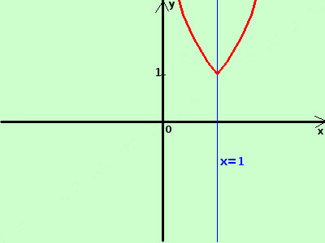

|
sviluppo Data la seguente funzione costruitene approssimativamente il grafico y = e|x-1|| Non coinvolgendo il modulo tutta la funzione utilizzo la definizione di modulo ed ottengo 
Nell'intervallo x <-1 disegno la curva e(1-x) Disegno la curva (in rosso) Da notare che, se il modulo coinvolge l'argomento x+1 di una funzione, allora il grafico e' simmetrico rispetto ad un asse verticale, in questo caso l'asse e' la retta x=1 |